IMAGE GALLERY
 Ferrari 812
Ferrari 812
Variations
-
Ferrari GTC4
-
Models
-
GTC4Lusso (2016–)
Like its predecessor, the GTC4Lusso is a 3-door shooting-brake with an all-wheel drive drivetrain, and is powered by a front-mid mounted V12 engine.
The GTC4Lusso's 6,262 cc (382.1 cu in) Ferrari F140 65° V12 engine is rated at 690 PS (507 kW; 681 hp) at 8,000 rpm and 697 N⋅m (514 lb⋅ft) of torque at 5,750rpm,[2]. The increase in output of the engine is due to the compression ratio raised to 13.5:1.[2] Ferrari claims a top speed of 335 km/h (208 mph), unchanged from the FF,[3] and a 0–100 km/h (0–62 mph) acceleration time of 3.4 seconds.[2]
The car uses an improved version (called the 4RM Evo) of Ferrari's patented four-wheel drive system introduced on the FF, integrated with four-wheel steering into the system. Collectively, the system is called 4RM-S.[3]
The GTC4Lusso was unveiled at the 2016 Geneva Motor Show. -
GTC4Lusso T (2017–)
Unveiled at the 2016 Paris Motor Show,[6] the GTC4Lusso T is a rear wheel drive only version of the GTC4Lusso equipped with a small displacement V8 engine but retains the 4WS four-wheel steering system.[7]
The GTC4Lusso T comes with a 3,855 cc (235.2 cu in) Ferrari F154 twin turbocharged V8 engine rated at 610 PS (449 kW; 602 hp) at 7,500 rpm and 760 N⋅m (561 ft⋅lb) of torque at 3,000–5,250 rpm. According to the manufacturer the car can attain a top speed of over 320 km/h (199 mph) and accelerate from 0 to 100 km/h (0 to 62 mph) in 3.5 seconds.
-
Design
The rear features Ferrari's signature Quad Circular Rear Lights (last seen on the F430) and the interior contains a Dual Cockpit Concept Design, separating the Driver Cockpit and the Passenger Cockpit by a central divider. The front of the car has a single grille that provides all the necessary cooling.
The GTC4Lusso is a further refinement of the shooting-brake coupe, reinterpreting the concept with an extremely streamlined, tapered shape that gives it an almost fastback-like silhouette.Engines
MODEL YEAR TYPE/CODE POWER/TORQUE GTC4Lusso 2016– 6,262 cc (382.1 cu in) V12 (F140 ED) 690 PS (507 kW; 681 hp) at 8,000 rpm, 700 N⋅m (516 ft⋅lb) at 5,750 rpm GTC4Lusso T 2017– 3,855 cc (235.2 cu in) V8 twin turbo (F154 BD) 610 PS (449 kW; 602 hp) at 7,500 rpm, 760 N⋅m (561 ft⋅lb) at 3,000–5,250 rpm
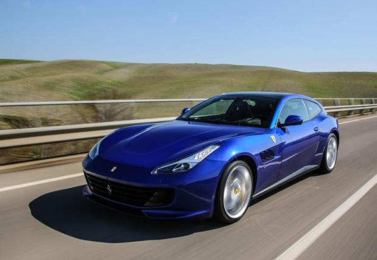 BLUE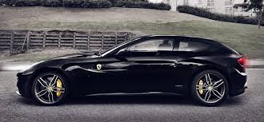 BLACK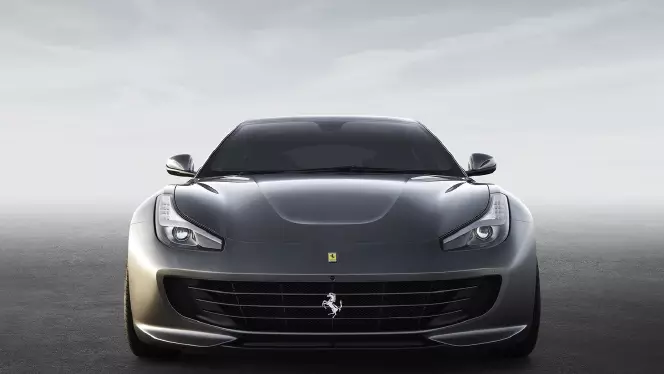 MATT BLACK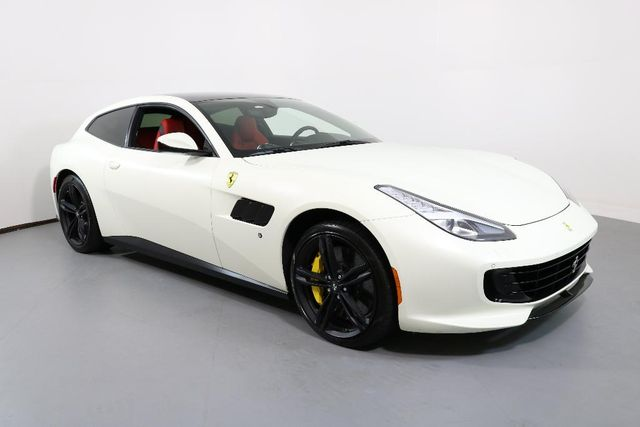 WHITE -
-
Ferrari Portofino
-
Specifications
Succeeding the company's successful V8 grand tourer, the California, the Portofino aims to strike the same balance between an easy to drive GT car and a typical Ferrari sports car as set by the California. It carries over the same philosophy as its predecessor but is now more refined and agile, courtesy of new design and technical elements.[5] Its body has drag coefficient of Cd=0.312.
-
Chassis
The chassis of the Portofino is made of 12 different aluminium alloys with much of its components now being integrated. The A-pillar of its predecessor consisted of 21 separate components but it is now a single piece in the Portofino. Hollow castings allow for increased structural rigidity, increasing it by 35% over the California T's chassis.
-
Weight
Weight saving has been kept in focus while the development of the Portofino was carried out. Ferrari engineers managed to shave weight from the powertrain, dashboard structure, air-conditioning and heating and electronic systems of the car resulting in a weight of 1,664 kg (3,668 lb), making the car 80 kg (176 lb) lighter than its predecessor.
-
Engine, transmission and performance
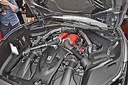 The 3.9-litre F154BD twin-turbocharged V8 engineThe engine, a 3,855 cc (3.9 L) F154BE twin-turbocharged V8, is the same as in the GTC4Lusso T, but yields a slightly de-tuned power output of 600 PS (441 kW; 592 hp) at 7,500 rpm and 760 N⋅m (561 ft⋅lb) of torque at 3,000-5,250 rpm. Changes to the engine include a 10% pressure increase in the combustion chamber, revised connecting rods and pistons and a single cast exhaust manifold. The car retains the 7-speed dual clutch transmission from its predecessor but features a new software to allow for faster gear shifts. The exhaust system has been tweaked to give the car a proper sound note while maintaining its grand touring nature, featuring an adjustable electric bypass valve that monitors the engine's sound according to driving conditions. The Portofino can accelerate from 0–100 km/h (0–62 mph) in 3.5 seconds, 0–200 km/h (0–124 mph) in 10.8 seconds and can attain a top speed of 320 km/h (199 mph).[6] -
Suspension and steering
The Portofino features magnetorheological dampers, a carryover from the California, with an improved software to maintain good ride quality even though having a stiffer suspension system than the California. Like the company's V12 grand tourer 812 Superfast, the Portofino features an electrically assisted power steering. Both the suspension system and steering become increasingly responsive when the car is in sports mode.
-
Interior
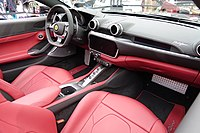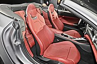 The Portofino's interior still offers very limited rear seatingThe interior of the Portofino was developed after taking input from various clients. The rear seats have increased legroom (by 5 centimeters) and the infotainment system is more advanced and easier to use, featuring a 10.2-inch display screen in the centre console with Apple CarPlay functionality, as in its predecessor. The air conditioning system has been refined as well and is now 25% faster and 50% quieter than the California's.
-
Awards
On July 9, 2018, Ferrari received the Red Dot: Best of the Best award for the Portofino's groundbreaking design. The international judging panel stated that the Portofino “embodies an impressive evolutionary advancement" and "fascinates with an exciting design language," with the vehicle's elegance "further underscored by the uncompromising quality in material and workmanship."
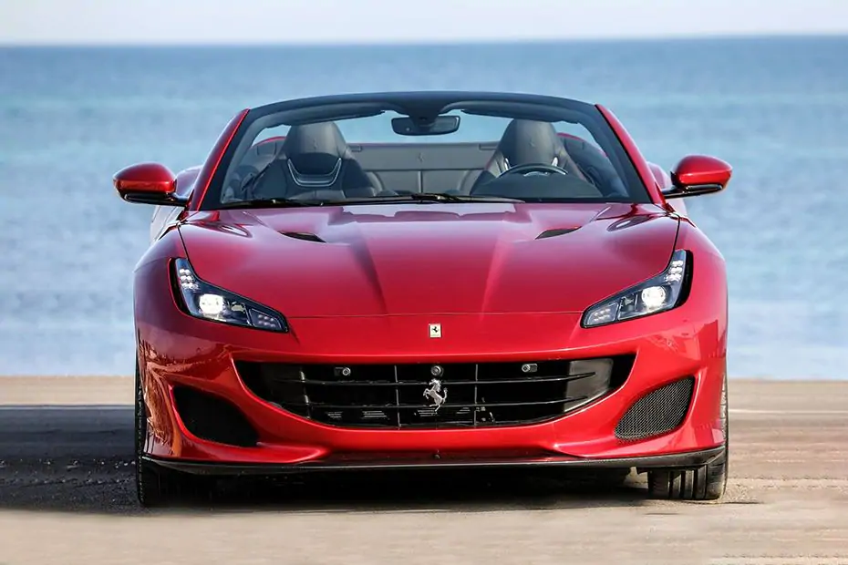 RED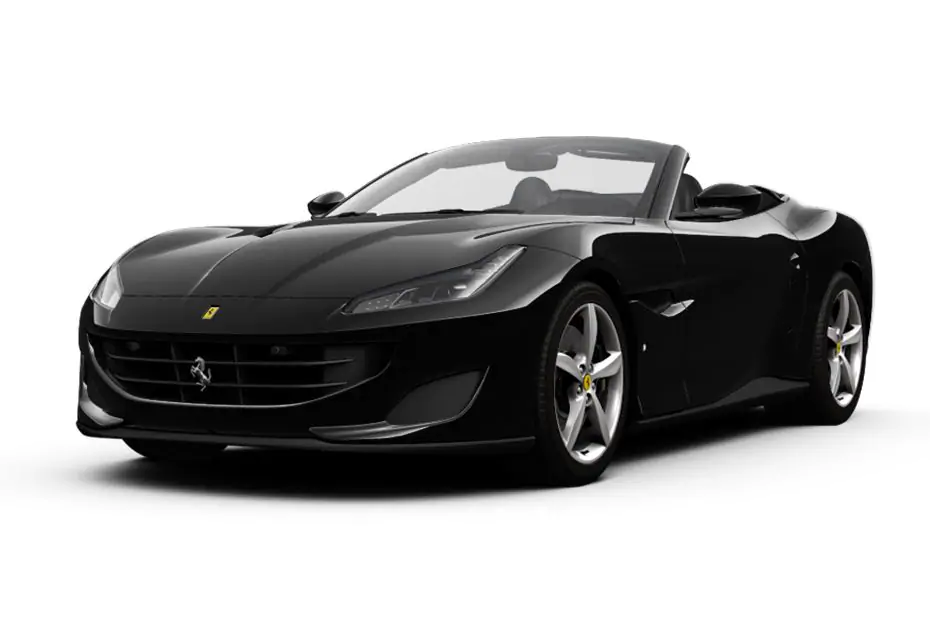 BLACK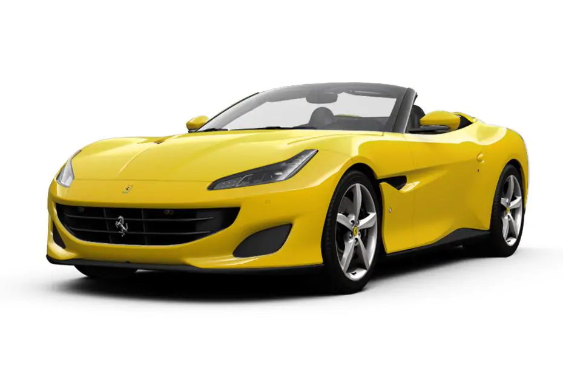 YELLOW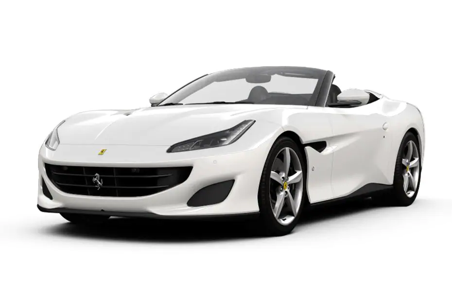 WHITE -
-
Ferrari 812
-
Ferrari Monza SP
At a private event held for customers and investors at the company's headquarters in Maranello, Italy in September 2018, Ferrari unveiled the first two models in its new Icona series of models. The cars called the Monza SP1 and SP2 (1 and 2 denoting the seating capacity) pay homage to the iconic open top race cars of the 1950s. The cars are designed with inspiration taken from Ferrari's historic race cars such as the 750 Monza and are developed to provide a dedicated open top driving experience. The car is based on the 812 Superfast and utilises its chassis, engine, transmission and interior components but the engine has been tuned to generate a maximum power output of 810 PS (596 kW; 799 hp).[13] The Monza can accelerate from 0–100 km/h (0–62 mph) in 2.9 seconds, 0–200 km/h (0–124 mph) in 7.9 seconds and can attain a maximum speed of 299 km/h (186 mph).
The car uses a carbon fibre construction and features bespoke wheels, interior colour choices, small scissor doors and a full LED strip serving as the tail light of the car. The virtual windshield (present ahead of the driver only and a concept used previously in the Mercedes SLR McLaren Stirling Moss) disrupts airflow over the driver in order to maintain maximum driving comfort. Due to the use of lightweight materials, the Monza SP weighs 1,500 kg (3,306.9 lb) while the SP1 weighs a further 20 kg (44.1 lb) less due to the deletion of passenger seat.
Production of the Monza SP will be limited to 500 units with all of the units already pre-sold to selected customers and with pricing set to be unveiled at the Paris Motor Show. The cars will be delivered with a special racing suit and a helmet tailored for each customer. The new Icona series will sit above the Ferrari's flagship V8 models. -
812 GTS
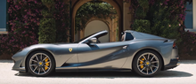 Sideview of the Ferrari 812 GTSUnveiled in September 2019, the 812 GTS is the open top version of the 812 Superfast. This marks the first front-engine V12 series production convertible model offered by Ferrari in 50 years, as the convertible variants of the 550, the 575 and the 599 were limited edition models meant for special customers only.
The large rear buttresses present at the rear hold the folding hard top roof under a tonneu cover present between them when not in use. The electronically operated hard top takes 14 seconds for operation and is operable at speeds up to 45 km/h (28 mph).
The GTS weighs 75 kg (165 lb) more than the Superfast due to chassis reinforcing components but maintains equal performance figures as its coupé counterpart. The mechanical components including the engine remain the same as the Superfast except for the transmission which has shorter gear ratios to improve the car's response to throttle inputs. The engine's high-pressure injection system reduces the number of particles that are emitted before the catalytic converter warms up. There is also a new gasoline particulate filter and a stop-start system to improve fuel economy. Other features shared with the Superfast include the Manettino selector knob, side-slip angle control and variable steering weight. The car has been aerodynamically refined in order to eliminate any turbulence arising from the loss of a fixed roof.
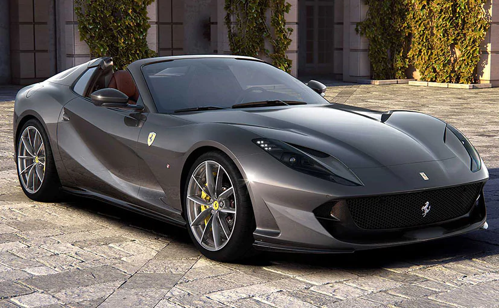 BLACK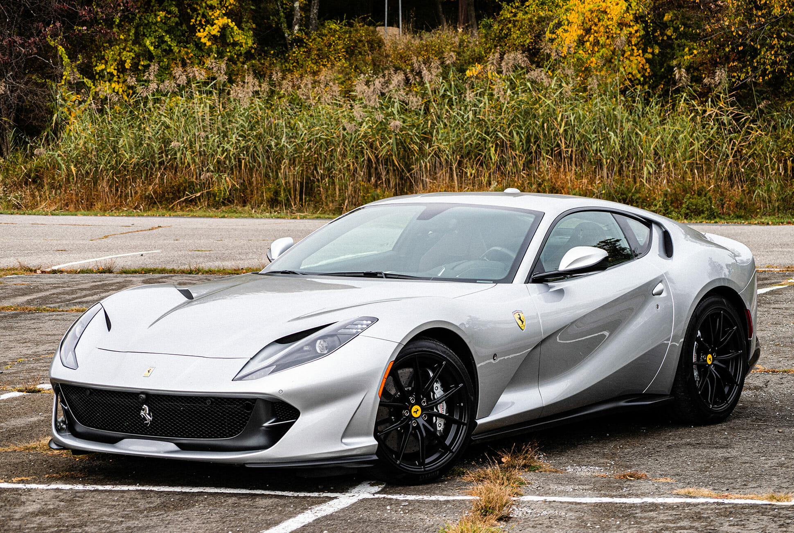 WHITE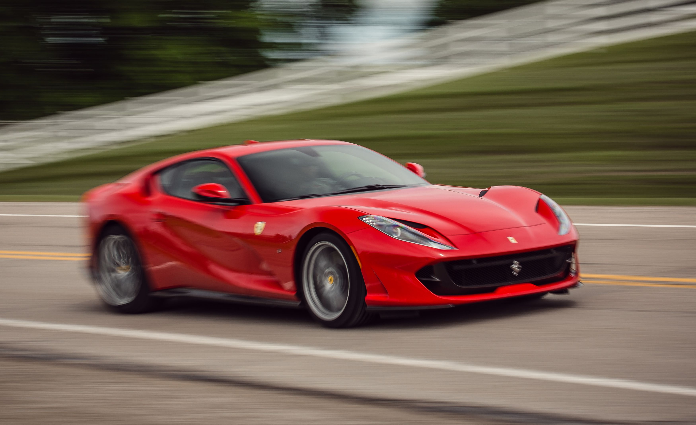 RED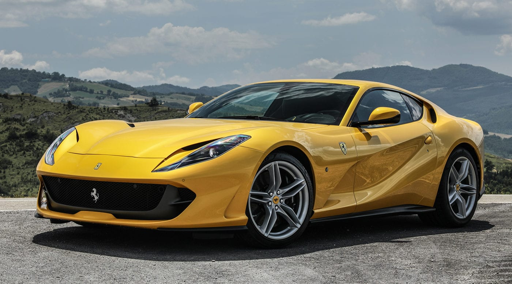 YELLOW -